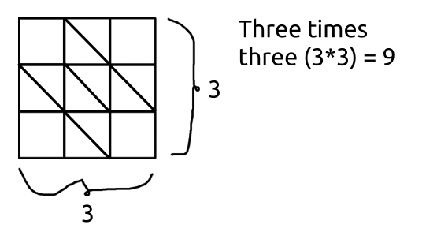

Introduction to Geometry and Graphs
A square is composed of four equal segments with 90 degree angles between them. A perimeter is how long you would take to go around a shape, walking exactly on these lines, so for a square, it is going to be four times a side to walk all four sides.
The area, meanwhile, is considered to be how many squares of side length 1 would fit inside the shape at or above 50% of their size. The last part is important when measuring the area of irregular objects out there.
You will notice that the area of a three by three square is composed of three squares of side length one per column, and three columns per row. Or, you could say, there are three squares of side length one per row, and three rows per column.
This kind of space, made of smaller squares, used for area measuring, is sometimes called a grid. This is not a very precise grid, however it happens we also have a very simple plus sign to match it, rather than something more complex, requiring more precise measurement, such as a face.
This plus covers five of the squares, so it's area is five. If the main square's sides are 3cm, then it's area would be 9cm2, nine square centimeters; And, the plus's area would be 5cm2, five centimeters squared.
If you try to calculate the permieter of the main square you will find that it is three plus three plus three plus three, so three times four, 12.
At this point, the area is smaller than the perimeter, however this will soon change.
Already for a side length of 4cm, the square's perimeter and area become equal. Try to calculate each of these, if you will, using what has been learned before. Start with the perimeter, then the area. Since we are now dealing with physical quantities such as four centimeters, make sure your final results for the perimeter have the suffix "cm", and that those for the area have the suffix "cm2".